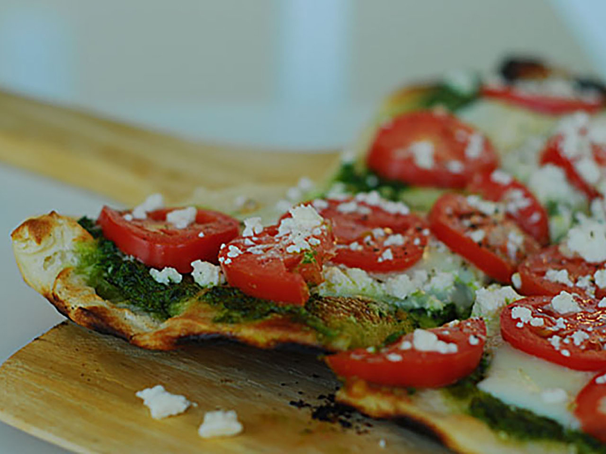

Pesto Pizza

Tasty alternative to your regular pizza!
There is nothing that you cannot put on top of a pizza! Even pineapple finds it's
way sometimes... But there are some ingredients, some flavours
that can't miss.
A pizza with pesto is as italian as the mozzarella cheese on top of it.
Prepare this classic at home and enjoy una serata italiana!!
Ingredients
- 1 (12 inch) pre-baked pizza crust
- 1/2 cup pesto
- 1 ripe tomato, chopped
- 1/2 cup green bell pepper, chopped
- 1 (2 ounce) can chopped black olives, drained
- 1/2 small red onion, chopped
- 1 (4 ounce) can artichoke hearts, drained and sliced
- 1 cup crumbled feta cheese
Steps
- Step 1: Preheat oven to 450 degrees F (239 degrees C)
- Step 2: Spread pesto on pizza crust. Top with tomatoes, bell
peppers, olives, red onions, artichoke hearts and feta cheese
- Step 3: Bake for 8 to 10 minutes, or until cheese is melted
and browned